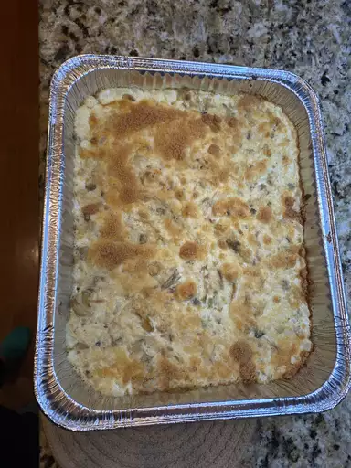

Easy Turkey Tetrazzini Recipe

Description
Put your leftover turkey to good use with this test kitchen-approved
turkey tetrazzini recipe.
Ingredients
- Pasta
- Butter
- vegetables
- seasonings
- white wine
- turkey
- canned soup
- Broth
- almonds
Steps
-
Boil and drain the pasta, then transfer it to a prepared baking
dish.
- Cook the vegetables in butter, then stir in the seasonings.
- Deglaze the pan with wine, if using.
-
Stir in the turkey, soup, sour cream, and broth. Cook until hot
and bubbly.
-
Spoon the turkey mixture over pasta and sprinkle with cheese and
almonds.
- Bake the turkey tetrazzini until hot and bubbly.
Back to top
Back to Home